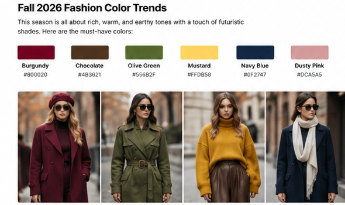
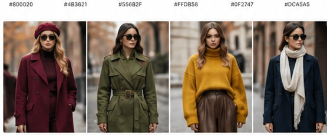
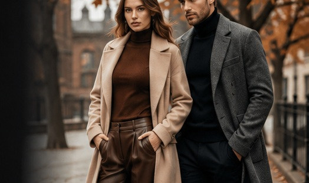

Table of Contents
Introduction: What Is Trending for Fall 2026?
Fall is the season when a wardrobe gets its richest texture, strongest layers and most interesting proportions. For 2026, fashion is moving beyond a single “quiet luxury” formula. Runway and editorial coverage points toward a more expressive mix of polished tailoring, tactile fabrics, statement outerwear, reworked classics, decorative details and thoughtful layering.
The biggest fall fashion trends 2026 are not about buying an entirely new wardrobe. The more useful approach is to take familiar pieces—blazers, denim, knitwear, shirts, skirts, trousers and coats—and update them through proportion, texture, color and accessories.
This guide covers fall fashion trends 2026 for women and men, including practical outfit ideas, autumn colors, denim, shoes, coats, layering and street style. The goal is simple: make the season's biggest fashion ideas easy to wear in real life.
Fall 2026 Fashion Colors
Color is one of the easiest ways to make an existing wardrobe feel new. Rich browns, burgundy, olive and deep navy work naturally with autumn neutrals, while brighter accents can keep an outfit from looking predictable.
How to Wear Fall Colors
- Burgundy: Use it on a coat, knit, handbag or shoe for a sophisticated statement.
- Chocolate brown: Pair it with cream, black, denim or warm camel for an expensive-looking tonal outfit.
- Olive: Works especially well with denim, leather, beige and off-white.
- Navy: A refined alternative to black for tailoring, coats and knitwear.
- Mustard and warm yellow: Use as an accent rather than covering the entire outfit.

Fall Fashion Trends 2026 for Women
Women's fall fashion in 2026 is balancing structure with softness. Tailored jackets, long silhouettes, expressive details and tactile fabrics can be combined with everyday basics rather than treated as runway-only statements.
1. The Modern Blazer
A strong blazer remains one of the smartest fall wardrobe investments. Try a slightly relaxed shoulder, a defined waist or a longer silhouette. Wear it over a fine knit with straight trousers, jeans or a long skirt.
2. Long Skirts and Layered Proportions
Midi and maxi skirts become especially useful in cooler weather because they work with boots, loafers, jackets and knitwear. Experiment with proportions: a fitted top under a larger coat, or a slim knit with a fuller skirt.
3. Art Deco-Inspired Details
Decorative fashion is returning through geometric embellishment, beading, fringe and polished evening details. You do not need a head-to-toe statement piece; a decorated bag, brooch or evening top can deliver the same effect.
4. Rich Textures
Suede, shearling, leather, jacquard, brocade, wool and tactile knits make simple outfits more interesting. Texture is particularly effective when the color palette stays controlled.

Easy women's fall outfit formula
Fine knit + tailored blazer + straight or wide-leg trousers + ankle boots + one statement accessory. Change the accessory and color combination to create several different looks from the same base wardrobe.
Fall Fashion Trends 2026 for Men
Men's fall fashion is becoming more flexible and expressive while keeping the foundations of good tailoring. Relaxed suits, structured outerwear, knit layers, straight trousers and refined casual pieces make up a versatile seasonal wardrobe.
1. Relaxed Tailoring
Instead of extremely tight suiting, look for jackets and trousers that allow movement. A relaxed blazer with a clean shirt or lightweight knit creates a modern silhouette without looking oversized everywhere.
2. Structured Coats
A long wool coat, leather jacket, shearling layer or technical outerwear piece can instantly define a fall outfit. Choose one strong outer layer and keep the rest simple.
3. Knitwear as the Main Layer
Polo sweaters, crewnecks, fine-gauge turtlenecks and textured cardigans are practical for changing temperatures. Brown, navy, olive, charcoal and cream make mixing easier.
4. Straight and Wider Trousers
Pair a clean trouser with a shorter jacket or a tucked knit to keep proportions intentional. For casual outfits, straight denim with a structured coat is an easy street-style formula.

Statement Outerwear and Layering
Outerwear is one of the defining parts of autumn fashion 2026. The most useful coat is not necessarily the loudest one; it is the piece that changes the shape of an outfit while still working with the clothes underneath.
- Try a long wool coat over a simple monochrome outfit.
- Use shearling or textured collars to add warmth and visual interest.
- Experiment with colorful or retro-inspired windbreakers for casual looks.
- Layer a scarf over a blazer or coat for a polished street-style finish.
- Use a cropped jacket with a longer skirt or trouser for contrast.
The three-layer rule
Start with a breathable base, add one visible mid-layer such as a shirt, knit or blazer, then finish with a coat or jacket. Keeping each layer slightly different in length or texture makes the outfit look intentional rather than bulky.
Denim Trends for Fall 2026
Denim is getting more varied for fall. Instead of relying on one universal jean shape, the season supports multiple silhouettes, from slimmer retro-inspired cuts to straight, wide and statement denim.
What to Try
- Dark-wash denim: polished enough for smarter outfits.
- Light-wash jeans: useful with autumn coats and darker knitwear.
- Straight-leg jeans: an easy everyday foundation.
- Wide-leg denim: best balanced with a more defined upper layer.
- Denim skirts: style with boots, knitwear and tailored jackets.
- Embellished or distressed denim: use as the focal point of a simpler outfit.
Accessories and Footwear to Elevate Your Look
Accessories can make a familiar outfit feel completely different. For Fall 2026, the strongest approach is to choose one or two noticeable pieces rather than stacking every trend at once.
Fall 2026 Street Style: How to Wear the Trends in Real Life
Street style is where runway ideas become practical. The most convincing outfits usually combine one trend with several timeless pieces. That approach keeps the look personal and prevents a seasonal trend from becoming a costume.
For a casual day
Try straight denim, a fine knit, a retro windbreaker and clean sneakers or boots. Add a structured bag or scarf if you want a more fashion-forward finish.
For work or smart casual
Build around a modern blazer, tailored trousers and a crisp shirt. Replace the traditional black palette with navy, chocolate or olive, then add a small metallic or burgundy accent.
For an evening look
Choose one dramatic element—an Art Deco-inspired top, statement skirt, textured coat or embellished accessory—and keep the rest streamlined.
How to Build a Better Fall 2026 Wardrobe
One of the most useful ways to follow fashion trends 2026 is to shop your existing wardrobe first. Trend fatigue is real, and a strong seasonal wardrobe does not require constant replacement.
- Choose three colors that already work with your wardrobe.
- Identify two silhouettes you want to update.
- Buy one high-impact outer layer before adding smaller trend pieces.
- Use accessories to refresh basics instead of replacing them.
- Prefer pieces that can be styled in at least three different outfits.
This approach makes your fall style more individual, more wearable and easier to maintain throughout the season.
FAQs About Fall Fashion Trends 2026
What are the biggest fall fashion trends for 2026?
The major directions include modern tailoring, expressive proportions, rich textures, statement outerwear, updated denim, thoughtful layering and decorative accessories.
What colors are trending for fall 2026?
Rich brown, burgundy, olive and deep navy are strong autumn foundations. Brighter accents such as red and turquoise can be used to add contrast.
What should women wear in fall 2026?
Try tailored blazers, long skirts, knit layers, statement coats, versatile denim, boots or polished flats, and one distinctive accessory.
What should men wear in fall 2026?
Build around relaxed tailoring, structured coats, knitwear, clean shirts, straight or wider trousers, refined footwear and restrained accessories.
Conclusion: The Fall 2026 Style Formula
The best fall fashion trends 2026 are the ones you can adapt to your own wardrobe. Start with a strong base of tailoring, denim, knitwear and outerwear. Then introduce seasonal color, texture, proportion and accessories one at a time.
Whether your style is minimalist, classic, streetwear-inspired, romantic or experimental, Fall 2026 offers plenty of room to personalize the season. The key is not to wear every trend—it is to choose the trends that make your existing style feel sharper, fresher and more like you.
Explore more on Fashion QD: discover the latest Fashion, Beauty, Street Style, Categories and Shopping guides.